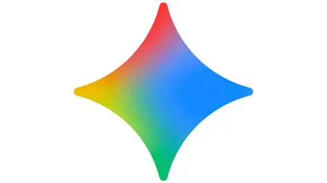
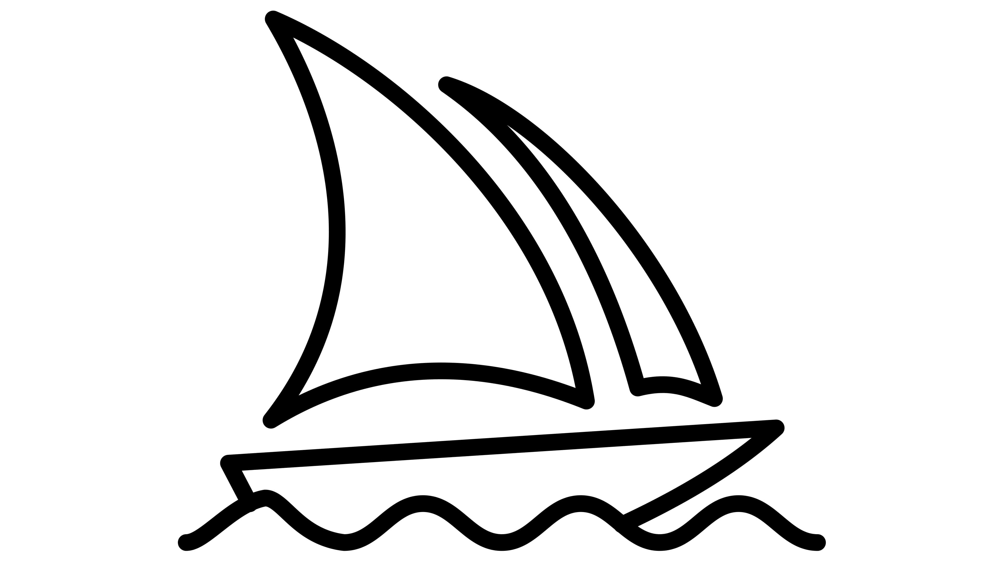
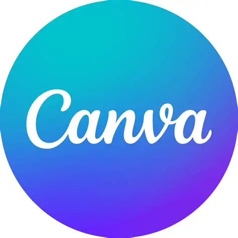

Bài tập 2 - Bài 5: Sáng tạo nội dung số
BÁO CÁO DỰ ÁN SÁNG TẠO NỘI DUNG SỐ CÓ HỖ TRỢ BỞI AI
• Chủ đề chiến dịch: Chiến dịch truyền thông "Sống Xanh trong kỷ nguyên số" (Zero Waste cho sinh viên).
• Người thực hiện: Lê Thị Quỳnh Như — MSV: 25023355
• Mục tiêu chiến lược: Ứng dụng hệ sinh thái AI nhằm rút ngắn 70% thời gian viết lách/thiết kế, duy trì tính cá nhân hóa cấu trúc trên 50% và bảo đảm tính chính xác tuyệt đối của dữ liệu môi trường.
I. Giới thiệu dự án & Mục tiêu cụ thể
- ♻️ Dự án tập trung vào việc xây dựng một bộ nội dung truyền thông đa phương tiện (bao gồm bài viết chuyên sâu và Infographic) nhằm nâng cao nhận thức của sinh viên về việc giảm thiểu rác thải nhựa.
- 🎯 Mục tiêu: Tạo ra nội dung vừa có tính thẩm mỹ cao, vừa có thông tin chính xác để thúc đẩy hành động thực tế.
🛠️ Sơ đồ chuỗi cung ứng nội dung số (AI Pipeline)

Google Gemini (AI Văn bản — Phần "Trí"): Đóng vai trò trợ lý nghiên cứu, lập cấu trúc luận điểm, định hình từ khóa và tối ưu hóa dữ liệu số liệu thực chứng.

Midjourney (AI Hình ảnh — Phần "Hồn"): Đóng vai trò họa sĩ bối cảnh, chuyển đổi ý tưởng văn bản thành tác phẩm thị giác độc bản chất lượng cao, mang đậm tính nghệ thuật.

Canva Magic Studio (AI Thiết kế — Phần "Xác"): Đóng vai trò kỹ thuật viên đồ họa, thực hiện bóc tách chủ thể, sắp xếp bố cục và đóng gói thành sản phẩm Infographic truyền thông hoàn chỉnh.
📅 II. NHẬT KÝ THỰC NGHIỆM CHI TIẾT (CREATOR LOGS)
Giai đoạn 1: Thiết lập cấu trúc tri thức & Lập dàn ý
- Mô tả hành động: Sử dụng kỹ thuật đóng vai (Role-prompting) để định hình tư duy cho AI, sau đó thực hiện lệnh truy vấn dữ liệu thời gian thực nhằm cập nhật chính xác thực trạng môi trường tại Việt Nam.
[Prompt 1 - Cấu trúc]: "Hãy đóng vai một chuyên gia môi trường và Content Creator. Hãy lập dàn ý cho một bài viết 1000 chữ về 'Lối sống Zero Waste cho sinh viên'. Yêu cầu: Có số liệu thực tế, giải pháp thực tiễn và phong cách viết truyền cảm hứng."
[Prompt 2 - Hiệu chỉnh]: "Tìm kiếm và cập nhật các số liệu thống kê cụ thể về rác thải nhựa tại Việt Nam giai đoạn 2025 - 2026."- Phân tích kết quả & Tinh chỉnh: Gemini cung cấp bộ khung 5 phần rất logic. Tuy nhiên, các số liệu sơ khởi còn mang tính định tính chung chung. Tôi đã thực hiện tối ưu bằng cách ra lệnh cập nhật số liệu thực tế năm 2025 (đạt kết quả hạt cát mịn: 70.000 tấn rác thải/ngày), đồng thời tự tay biên soạn lại cấu trúc "Lời kết" để lồng ghép cảm xúc cá nhân.
- 📸 Minh chứng giao diện Google Gemini:

{kind=link}
Giai đoạn 2: Kỹ nghệ tạo dựng thị giác độc bản
- Mô tả hành động: Khởi tạo câu lệnh miêu tả chi tiết chất liệu, ánh sáng và bối cảnh không gian sống xanh của sinh viên Việt Nam.
- Kỹ nghệ Prompt hệ thống đã áp dụng:
/imagine prompt: A modern Vietnamese student lifestyle, reusable coffee cup, bamboo straw on a wooden desk, soft cinematic lighting, eco-friendly aesthetic, 8k, high detail --ar 16:9- Phân tích kết quả & Tinh chỉnh: Hệ thống kết xuất đồ họa ra bức ảnh có tone màu gỗ tự nhiên và sắc xanh lá cực kỳ bắt mắt. Để tối ưu hóa bố cục, tôi đã ứng dụng tính năng nâng cao Vary (Region) — khoanh vùng và sử dụng công cụ Lasso để loại bỏ hoàn toàn các chi tiết gây nhiễu, giúp không gian bức ảnh đạt chuẩn tối giản.
- 📸 Minh chứng thiết kế Midjourney:


Giai đoạn 3: Đóng gói và Hoàn thiện sản phẩm truyền thông
- Mô tả hành động: Nhập tài nguyên thị giác từ Midjourney vào không gian làm việc của Canva Studio.
- Ứng dụng tính năng AI: Kích hoạt công cụ Magic Grab để tự động bóc tách chủ thể sinh viên ra khỏi nền, dịch chuyển lớp ảnh để chèn các khối văn bản hệ thống từ Gemini ra phía sau, tạo chiều sâu thị giác (3D Layer).
- Sản phẩm cuối cùng: Một bản Infographic truyền thông mang tính chuyên nghiệp cao với ngôn ngữ thiết kế đồng bộ.
- 📸 Minh chứng sản phẩm Infographic:

📊 III. MA TRẬN ĐỐI CHIẾU VÀ ĐÁNH GIÁ NĂNG LỰC CÔNG CỤ
| Tiêu chí phân tích | Google Gemini | Midjourney | Canva Magic Studio |
|---|---|---|---|
| Khả năng hiểu ý định (Intent) | Cực kỳ cao: Nắm bắt rất tốt ngữ cảnh ngữ nghĩa tiếng Việt phức tạp và đa tầng. | Trung bình: Yêu cầu tư duy Prompt bằng tiếng Anh chuẩn xác để tối ưu cấu trúc ảnh. | Khá tốt: Hỗ trợ nhận diện và tự động hóa các thao tác thiết kế kéo thả. |
| Biên độ sáng tạo (Creativity) | Tạo cấu trúc logic tốt nhưng lớp từ ngữ đôi khi gặp hiện tượng lặp cấu trúc văn phong. | Đỉnh cao: Khởi tạo những góc nhìn nghệ thuật mới lạ, độc bản và duy mỹ. | Mang tính thực tiễn cao, tối ưu hóa khả năng dàn trang và phân bổ bố cục. |
| Thời gian phản hồi | Tức thì (biên độ xử lý dưới 5 giây). | Từ 1 - 2 phút (phụ thuộc vào dung lượng hàng đợi GPU). | Tức thì trong từng thao tác tương tác của người dùng. |
| Độ chính xác dữ liệu | Cần con người kiểm chứng lại vì dễ gặp lỗi ảo tưởng số liệu. | Khó kiểm soát tuyệt đối các chi tiết siêu nhỏ (số ngón tay, chữ viết nền). | Tuyệt đối: Vận hành chính xác dựa trên tài nguyên và thông số có sẵn. |
📑 Nhận định chuyên sâu của Hệ thống: Việc kết hợp 3 công cụ này tạo ra một "dây chuyền sản xuất nội dung số" khép kín. Nếu thiếu bất kỳ một mắt xích nào, quy trình quản trị nội dung sẽ lập tức bị đình trệ hoặc giảm sút nghiêm trọng tính chuyên nghiệp.
⚖️ IV. VAI TRÒ CỦA AI & TRÁCH NHIỆM ĐẠO ĐỨC SỐ (DIGITAL ETHICS)
1. Sự dịch chuyển tư duy sáng tạo
Tích hợp AI đã thay đổi hoàn toàn tư duy của tôi từ một "Người thợ thủ công" (trực tiếp tạo nội dung thô) sang một "Người điều phối hệ thống" (Project Manager điều hành công cụ). AI giải quyết triệt để "nỗi sợ trang giấy trắng", nhưng con người là duy nhất nắm giữ trải nghiệm thực tế — thứ cảm xúc chân thực về những buổi nhặt rác bảo vệ bãi biển địa phương mà không một thuật toán máy học nào có thể tự sao chép được.
2. Ba nguyên tắc Đạo đức số nghiêm ngặt đã áp dụng
• Sở hữu trí tuệ (Intellectual Property): Tuyệt đối không lồng ghép tên các nghệ sĩ đương đại vào prompt Midjourney nhằm triệt tiêu hành vi xâm phạm phong cách cá nhân và tôn trọng quyền tác giả gốc.
• Tính minh bạch dữ liệu (Transparency): Công khai 100% tỷ lệ đóng góp của AI trong báo cáo. Định vị rõ AI là trợ lý hỗ trợ quyền tác giả thuộc về con người.
• Bộ lọc chống sai lệch thông tin (Anti-Deepfake News): Dành 30 phút tiến hành đối chiếu, kiểm toán toàn bộ số liệu môi trường do Gemini cung cấp với cổng thông tin chính thức của Bộ Tài nguyên và Môi trường Việt Nam trước khi đưa vào Infographic, bảo đảm tính thực chứng của sản phẩm.
🎯 PHẦN 5: KẾT LUẬN
MÔ HÌNH HỢP TÁC TỐI ƯU:
Chiến dịch truyền thông đạt đến sự hài hòa và chuyên nghiệp cao nhất khi thiết lập tỷ lệ vàng:
AI đóng góp 40% (Nền tảng hạ tầng công nghệ) và Con người đóng góp 60% (Định hướng chiến lược, Cảm xúc và Kiểm chứng thực tế).
Đây chính là mô hình làm việc tiêu chuẩn của thời đại mới, giúp chúng ta giải phóng sức lao động để tập trung vào giá trị cốt lõi: Sáng tạo thuần khiết và Tư duy phản biện nâng cao.
Link đính kèm sản phẩm cuối cùng: